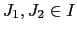
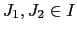
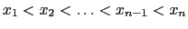
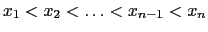
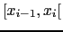
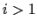
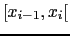
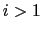

We have a set of intervals  so that for each two intervals
,
so that for each two intervals
,
 the disjunction is the empty set
the disjunction is the empty set
 and the union of all intervals forms a new interval from zero to
and the union of all intervals forms a new interval from zero to
 ,
,
 . Intuitively, this means that the intervals do not overlap and that there are no gaps between the intervals.
. Intuitively, this means that the intervals do not overlap and that there are no gaps between the intervals.
To ensure both properties mentioned above, the intervals are specified by their right hand value only. Thus, we have a set  whose values define the right hand sides of all intervalls. Suppose we can define an order on the set such that
. Then the
whose values define the right hand sides of all intervalls. Suppose we can define an order on the set such that
. Then the  th interval is
 for  and
th interval is
 for  and  for
for  . This allows us to specify
. This allows us to specify  intervals by
intervals by  values only and to ensure that the intervals neither do overlap nor have gaps inbetween. Now the probability
values only and to ensure that the intervals neither do overlap nor have gaps inbetween. Now the probability  for the
for the  th interval is given by
th interval is given by